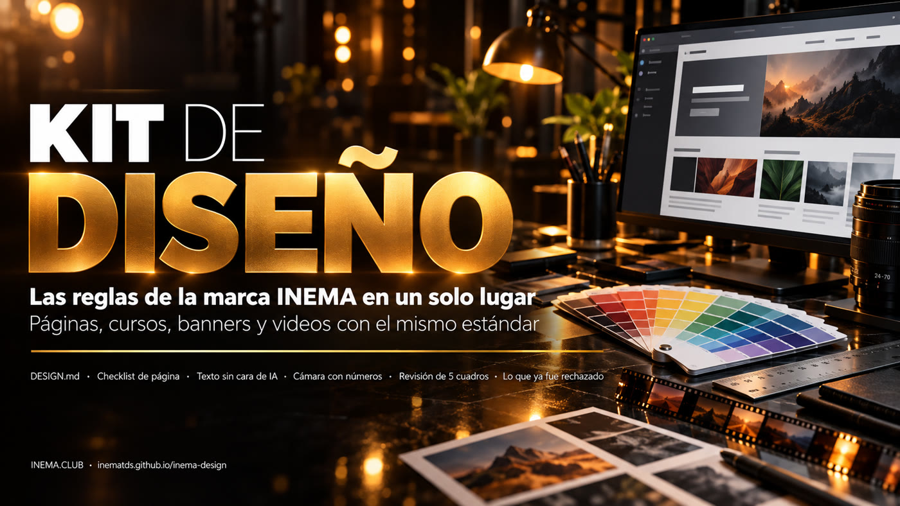

Las reglas de la marca en un solo lugar
Una carpeta que el agente lee antes de crear cualquier pieza. Colores, fuentes, texto, cámara y todo lo que ya fue rechazado, con la fuente de cada regla.

INEMA Design es una carpeta de archivos de texto con las reglas visuales del ecosistema INEMA: colores, fuentes, forma de escribir, cámara de video y la lista de lo que Nei ya rechazó. Sirve a quien crea páginas, guías, cursos, banners, explicavideos, shorts y reels con agentes como Claude Code y Codex. El agente lee la carpeta antes de empezar y la pieza sale con el estándar de la marca, sin repetir errores antiguos. Para usarla, basta copiar la carpeta y pedirle al agente que lea primero su CLAUDE.md.
Un "design-os" adaptado a INEMA
El método viene del Claude Design Blueprint: una carpeta de diseño que el agente lee antes de cada proyecto. Aquí se llenó con las reglas que ya estaban repartidas en skills, lecciones y memorias.
🎨 Una marca, varias líneas
DESIGN.md tiene un núcleo común y una sección por tipo de pieza: guía dark ámbar, curso v2, v5 y v6, banner, thumb y video. Cada color tiene su origen anotado.
🎬 Video con nota
Estándar de 16:9 y 9:16, palabras de cámara con número y revisión de 5 cuadros (0, 25, 50, 75 y 100%) con nota de 0 a 10 en visual, ritmo y marca.
🧾 Memoria de correcciones
Todo lo que Nei ya rechazó queda en una sola lista. Cuando corrige algo nuevo, se agrega una línea ahí y el error no vuelve.
El agente lee, produce y revisa
El orden de lectura está en el CLAUDE.md de la carpeta. El agente no resuelve los conflictos entre reglas: van a DECISOES.md y el dueño elige.
Páginas
regras/pagina-20.md (20 puntos antes de publicar) y checks/preship.py, que revisa el HTML.
Texto
regras/texto.md: aperturas prohibidas, palabras que suenan a IA, año escrito en letras en la locución.
Video
video/style.md, video/camera.md y video/revisao-5-quadros.md.
Muy poco
Los archivos son texto. Solo los dos scripts de revisión necesitan una herramienta instalada.
Un agente
Claude Code, Codex u otro que lea los archivos de la carpeta.
git clone https://github.com/inematds/inema-designPython 3
Para preship.py. No hay que instalar nada más que Python.
python3 --versionffmpeg
Para sacar los 5 cuadros de un video terminado.
ffmpeg -versionDel clon a la pieza revisada
Los comandos de abajo son los que están en el repositorio.
Copia la carpeta
Deja la carpeta donde el agente pueda leerla, por ejemplo en ~/projetos/inema-design.
git clone https://github.com/inematds/inema-design ~/projetos/inema-design
Pide al agente que lea primero
Antes de cualquier pieza visual, la primera instrucción es leer el kit. El agente dice en hasta seis líneas qué leyó y qué reglas valen.
"Lee ~/projetos/inema-design/CLAUDE.md y sigue el orden de lectura. Después crea la guía del proyecto X."
Revisa la página antes de publicar
El script prueba una parte de los 20 puntos (h1, main, viewport, título, descripción, imagen para compartir, favicon, tamaño de las imágenes, etiquetas). El resto se revisa con la lista.
python3 checks/preship.py guia/index.html # PASS/FAIL por ítem y el total
Revisa el video en 5 cuadros
Saca los cuadros, arma una hoja y da nota de 0 a 10 en visual, ritmo y marca. Una nota menor que 8 vuelve a corrección. Si rehacer cuesta crédito, pregunta antes.
V=video.mp4; D=$(ffprobe -v error -show_entries format=duration -of csv=p=0 "$V") for p in 0 25 50 75 100; do t=$(python3 -c "print(min($D*$p/100, $D-0.05))") ffmpeg -v error -y -ss "$t" -i "$V" -frames:v 1 "quadro-$p.jpg" done
Registra cada corrección
Cuando el dueño rechace algo, agrega una línea con fecha en memoria/correcoes.md. En la próxima pieza el agente ya lee esa regla.
- 10/10 — Zoom 1,4–1,9 que corta el texto: rechazado. Disolvencia, imagen completa, zoom ≤ 1,25.
Probado en piezas reales
Las dos revisiones se corrieron con material ya publicado.
PASS 18 html has a lang attribute PASS 18 exactly one h1 FAIL 18 main landmark present PASS 3 viewport meta present FAIL 20 og:image is set FAIL 20 theme-color is set FAIL 20 favicon link is set FAIL 16 every img has width and height 8/13 pass
Lo que eligió el dueño
Revisión hecha una por una entre el 10 y el 12/10/2026. Las páginas y los videos ya publicados quedan como estaban; el valor anterior de cada ítem está en HISTORICO.md.
| Tema | Decisión |
|---|---|
| Color de marca | Amarillo #FACC15 en páginas, cursos y video (antes ámbar #E2A23B en la guía) |
| Fondo oscuro | Negro #0c0c10 en toda página nueva |
| Fondo claro | Amarillo solo como relleno: botón, resaltador y caja; la letra queda oscura y el enlace es #854d0e |
| Títulos | Sora; el cuerpo en Inter |
| Emoji | Solo como ícono pequeño en la guía y en el curso v2; nada en los cursos v5 y v6 |
| Íconos | Trazo fino de línea, estilo Lucide |
| Banner | Letras contenidas, escena cálida; azul solo en el estilo opus, cuando se pide |
| Miniatura | Puede usar tipografía condensada; el banner no |
| Reels y shorts | Cambio de imagen cada 1,5–3 s y voz de Nei por defecto |
| Zoom | Hasta 1,25× en imagen con texto; hasta 1,4× en foto en el reel |
| Presets de video | Los cinco siguen libres; las reglas que nacieron de rechazos valen para todos |
Tres etapas
La primera crea los archivos. Las otras conectan el kit con las herramientas que producen las piezas.